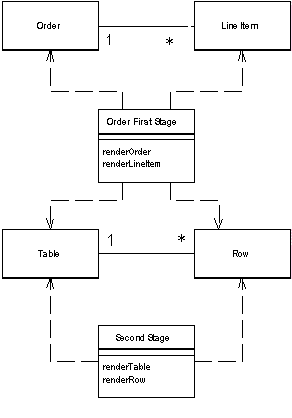
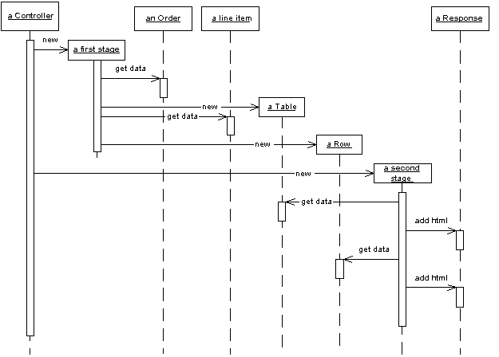
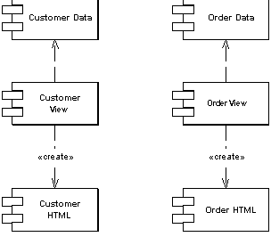
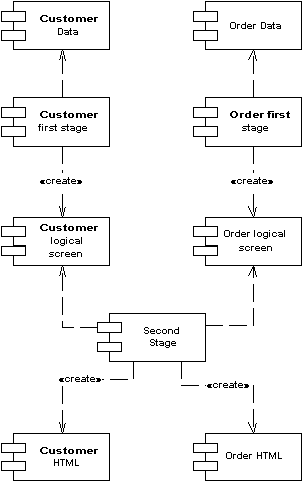
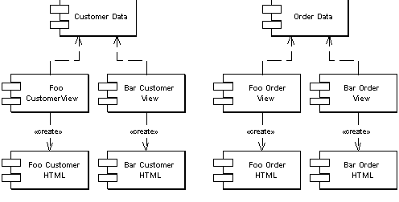
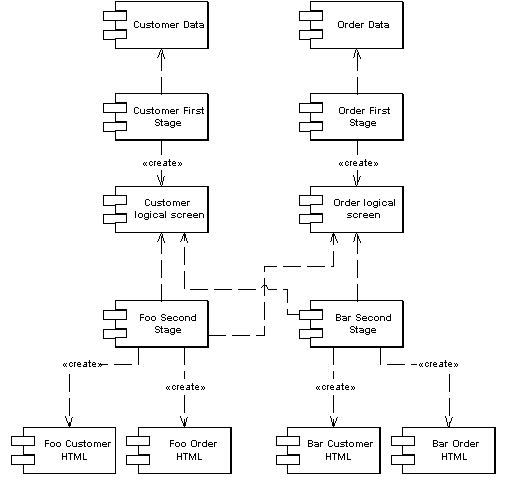

| Home | Articles | Talks | Links | Contact Me | ISA | ThoughtWorks |
Turn domain data into HTML in two steps: first by forming some kind of logical page, then rendering the logical page into HTML.

If you have a web application with many pages, you often want to have a consistent look and organization to the site. If every page looks different, you end up with a different look and feel that users find confusing. You may also want to make global changes to the appearance site easily.
Common web site approaches using Template View or Transform View make this difficult because presentation decisions are often duplicated across multiple pages or transform modules. A global change can force you to change several files.
Two Step View deals with this problem by splitting the transformation into two stages. The first transforms the model data into a logical presentation without any specific formatting, and the second stage converts that logical presentation with the actual formatting needed. This way you can make a global change by altering the second stage, or support multiple output look and feels with one second stage each.
The key to this pattern is to make the transformation to the HTML a two stage process. The first stage assembles the information that should be displayed in a logical screen structure that is suggestive of the display elements, yet does not contain any HTML. The second stage takes that presentation-oriented structure and renders it into HTML
This intermediate form is a kind of logical screen. Its elements might include things like fields, headers, footers, tables, choices, and the like. As such it's certainly presentation-oriented and certainly constrains the screens to follow a definite style. You can think of the presentation-oriented model as one that defines the various kinds of widgets that you can have and the data the widgets contain, but does not specify what their appearance is in HTML.
This presentation-oriented structure is assembled by specific code written for each screen. The first stage's responsibility is to access a domain-oriented model, either a database, a domain model, or a domain-oriented Data Transfer Object, extract the relevant information for that screen, and then put that information into the presentation-oriented structure.
The second stage is then turns this presentation-oriented structure into HTML. It knows about each element in the presentation-oriented structure and how to show that element as HTML. As such a system with many screens can be rendered to HTML by a single second stage - so all the HTML formatting decisions are made in one place. Of course the constraint is that the resulting screen must be derivable from the presentation-oriented structure.
Figure 1: Sample classes for two step rendering.
There are several ways in which you can build a Two Step View. Perhaps the easiest to think about is using two step XSLT. A single step XSLT follows the approach in Transform View. Each page has a single XSLT stylesheet that transforms the domain oriented XML into HTML. The two step approach uses two XSLT stylesheets. The first stage transforms the domain-oriented XML into a presentation-oriented XML. The second stage stylesheet then renders that presentation-oriented XML into HTML.
Another way is to use classes. Here you define the presentation-oriented structure as a set of classes, with a table class, a row class, etc. The first stage takes domain information and instantiates these presentation-oriented classes into a structure that models a logical screen. Then you render these classes into HTML, either by getting each presentation-oriented class to generate HTML for itself, or by having a separate HTML renderer class to do the job.
Figure 2: Sequence diagram for two step rendering
Both of the above approaches are based on Transform View. You can also do a Template View based approach. To do this you need to pick templates that are based around the idea of a logical screen. For example you might have a template that looks like
<field label = "Name" value = "getName" />
The template system then converts these logical tags to HTML. In such a scheme the page definition wouldn't include any HTML, it would include these logical screen tags - as a result it would probably be an XML document. Of course this has the disadvantage that you lose the ability to use wisiwig HTML editors.
The key value in Two Step View comes from the separation of first and second stages, allowing you to make global changes more easily. it helps to think of two situations: multi-appearence web application and single-appearence web application. Multi-appearence web apps are the rarer breed, but one that's growing. A multi-appearance web application is one where the same basic functionality is provided through multiple organizations, and each organization wants it's own distinct look to the application. A current example of this is airline travel sites where as you look at them you can tell from the page layout and design that they are all variations on one base travel site. I suspect many airlines would want that same functionality but with a distinctly different and individual appearance.
The singe-appearance case is the more common one, where there's only one organization fronting the web app and they would like a consistent look throughout the site. That's the easiest case to consider first.
With a single stage view (either a Template View or a Transform View you build one view module per page of the web application.
Figure 3: Single stage view with one appearance
With a Two Step View you have two stages to the view. You have one first stage module per page in the web application and only second stage module for the entire application. Your pay-off in using Two Step View is that any change you can make to the appearance of the site in the second stage is much easier to make, since one change in the second stage affects the entire site.
Figure 4: Two stage view with one appearance
With a multi-appearance app this advantage is compounded. You a single-stage view for each combination of screen and appearance. So ten screens and three appearances require 30 single stage view modules. Using Two Step View, however you can get away with ten first stages and three second-stages. The more screens and appearances you have, the bigger the saving.
Figure 5: Single stage view with two appearances
Figure 6: Two stage view with two appearances
However your ability to pull this off is entirely dependent on how well you can make the presentation-oriented structure to really serve the needs of the appearance. A design heavy site, where each page is supposed to look different, won't work well with Two Step View because it's to find enough commonality between the screens to get a simple enough presentation-oriented structure. Essentially the design of the site is constrained by the presentation-oriented structure - for many sites that is too much of a limitation.
Another limitation of Two Step View is the tools to use it. Tools are widely available for designers with no programming skills to lay out HTML pages using Template View. Two Step View forces programmers to write the renderer and controller objects. Thus programmers have to be involved in any design change.
It's also true that Two Step View, with its multiple layers, presents a harder programming model to learn, although once you are used to it it's no more difficult - and may help to reduce repetitive boilerplate code.
This approach to a Two Step View uses a two stage XLST transformation. The first stage transforms the domain specific XML into a logical screen XML, the second stage transforms the logical screen XML into HTML.
The initial domain oriented XML looks like this:
<album> <title>Zero Hour</title> <artist>Astor Piazzola</artist> <trackList> <track><title>Tanguedia III</title><time>4:39</time></track> <track><title>Milonga del Angel</title><time>6:30</time></track> <track><title>Concierto Para Quinteto</title><time>9:00</time></track> <track><title>Milonga Loca</title><time>3:05</time></track> <track><title>Michelangelo '70</title><time>2:50</time></track> <track><title>Contrabajisimo</title><time>10:18</time></track> <track><title>Mumuki</title><time>9:32</time></track> </trackList> </album>
The first stage XSLT processor transforms this into the following screen oriented XML.
<screen> <title>Zero Hour</title> <field label="Artist">Astor Piazzola</field> <table> <row><cell>Tanguedia III</cell><cell>4:39</cell></row> <row><cell>Milonga del Angel</cell><cell>6:30</cell></row> <row><cell>Concierto Para Quinteto</cell><cell>9:00</cell></row> <row><cell>Milonga Loca</cell><cell>3:05</cell></row> <row><cell>Michelangelo '70</cell><cell>2:50</cell></row> <row><cell>Contrabajisimo</cell><cell>10:18</cell></row> <row><cell>Mumuki</cell><cell>9:32</cell></row> </table> </screen>
To do this we need the following XSLT program.
<xsl:template match="album"> <screen><xsl:apply-templates/></screen> </xsl:template> <xsl:template match="album/title"> <title><xsl:apply-templates/></title> </xsl:template> <xsl:template match="artist"> <field label="Artist"><xsl:apply-templates/></field> </xsl:template> <xsl:template match="trackList"> <table><xsl:apply-templates/></table> </xsl:template> <xsl:template match="track"> <row><xsl:apply-templates/></row> </xsl:template> <xsl:template match="track/title"> <cell><xsl:apply-templates/></cell> </xsl:template> <xsl:template match="track/time"> <cell><xsl:apply-templates/></cell> </xsl:template>
The screen oriented XML is very plain. To turn it into HTML we use a second stage XSLT program.
<xsl:template match="screen">
<HTML><BODY bgcolor="white">
<xsl:apply-templates/>
</BODY></HTML>
</xsl:template>
<xsl:template match="title">
<h1><xsl:apply-templates/></h1>
</xsl:template><xsl:template match="field">
<P><B><xsl:value-of select = "@label"/>: </B><xsl:apply-templates/></P>
</xsl:template>
<xsl:template match="table">
<table><xsl:apply-templates/></table>
</xsl:template>
<xsl:template match="table/row">
<xsl:variable name="bgcolor">
<xsl:choose>
<xsl:when test="(position() mod 2) = 1">linen</xsl:when>
<xsl:otherwise>white</xsl:otherwise>
</xsl:choose>
</xsl:variable>
<tr bgcolor="{$bgcolor}"><xsl:apply-templates/></tr>
</xsl:template>
<xsl:template match="table/row/cell">
<td><xsl:apply-templates/></td>
</xsl:template>
To assemble the two stages, I've used Front Controller to help separate the code that does the work.
class AlbumCommand...
public void process() {
try {
Album album = Album.findNamed(request.getParameter("name"));
album = Album.findNamed("1234");
Assert.notNull(album);
PrintWriter out = response.getWriter();
XsltProcessor processor = new TwoStepXsltProcessor("album2.xsl", "second.xsl");
out.print(processor.getTransformation(album.toXmlDocument()));
} catch (Exception e) {
throw new ApplicationException(e);
}
}
It's useful to compare this to the single stage approach in Transform View. Consider changing the colors of the alternating rows. Using Transform View it would require editing every XSLT program. With Two Step View only the single second stage XSLT program needs to be changed. While it might be possible to use callable templates to do something similar, this will need a fair bit of XSLT gymnastics to pull off. The down side of Two Step View is that the final HTML is very much constrained by the screen oriented XML.
Although the XSLT route is conceptually the easiest way to think about implementing Two Step View, there are plenty of other ways to do it. For this example I'll use JSPs and custom tags, although they are both more awkward and less powerful than XSLT they do show how the pattern can manifest itself in different ways.
The key rule of Two Step View is that the choosing of what to display and the HTML that displays it are utterly separated. For this example my first stage is handled by a JSP page and its helper, while a set of custom tags deals with the second stage.
The interesting part of the first stage is the JSP page
<%@ taglib uri="2step.tld" prefix = "2step" %> <%@ page session="false"%> <jsp:useBean id="helper" class="actionController.AlbumConHelper"/> <%helper.init(request, response);%> <2step:screen> <2step:title><jsp:getProperty name = "helper" property = "title"/></2step:title> <2step:field label = "Artist"><jsp:getProperty name = "helper" property = "artist"/></2step:field> <2step:table host = "helper" collection = "trackList" columns = "title, time"/> </2step:screen>
I'm using Page Controller for the JSP page with a helper object, that much you can flick over to Page Controller to read. For this discussion the important thing to do is look at the tags that are part of the "2step" name space. These are the tags that I'm using to invoke the second stage. Notice that there is no HTML on the JSP page, the only tags that are present are either the second stage tags, or bean manipulation tags to get values out of the helper.
Each of the second stage tags has an implementation to pump out the necessary HTML for that logical screen element. The simplest of these is the title.
class TitleTag...
public int doStartTag() throws JspException {
try {
pageContext.getOut().print("<H1>");
} catch (IOException e) {
throw new JspException("unable to print start");
}
return EVAL_BODY_INCLUDE;
}
public int doEndTag() throws JspException {
try {
pageContext.getOut().print("</H1>");
} catch (IOException e) {
throw new JspException("unable to print end");
}
return EVAL_PAGE;
}
For those that haven't indulged, a custom tag works by implementing hook methods that are called at the beginning and the end of the tagged text. So this tag simply wraps it's body content with an <H1> tag.
A more complex tag, such as the field, can take an attribute. The attribute is tied into the tag class using a setting method
class FieldTag...
private String label;
public void setLabel(String label) {
this.label = label;
}
With the value set, you can then use it in the output.
class FieldTag...
public int doStartTag() throws JspException {
try {
pageContext.getOut().print("<P>" + label + ": <B>");
} catch (IOException e) {
throw new JspException("unable to print start");
}
return EVAL_BODY_INCLUDE;
}
public int doEndTag() throws JspException {
try {
pageContext.getOut().print("</B></P>");
} catch (IOException e) {
throw new JspException("how are checked exceptions helping me here?");
}
return EVAL_PAGE;
}
The table tag is the most sophisticated of the tags. As well as allowing the JSP writer to choose which columns to put in the table, it also does highlighting of alternate rows. Similarly to my previous example, the highlighting is done by the second stage so that a system wide change can be done globally.
The table tag takes attributes for the name of the collection property, the object on which the collection property sits, and a comma separated list of column names.
class TableTag...
private String collectionName;
private String hostName;
private String columns;
public void setCollection(String collectionName) {
this.collectionName = collectionName;
}
public void setHost(String hostName) {
this.hostName = hostName;
}
public void setColumns(String columns) {
this.columns = columns;
}
I made a helper method to get a property out of an object. There's a good argument for using the various classes that support Java beans, rather than just invoking a getSomething method, but this will do for the example.
class TableTag...
private Object getProperty(Object obj, String property) throws JspException {
try {
String methodName = "get" + property.substring(0, 1).toUpperCase() + property.substring(1);
Object result = obj.getClass().getMethod(methodName, null).invoke(obj, null);
return result;
} catch (Exception e) {
throw new JspException("Unable to get property " + property + " from " + obj);
}
}
This tag doesn't have a body. When it's called it pulls the named collection out of the request property and iterates through this collection to generate the rows of the table.
class TableTag...
public int doStartTag() throws JspException {
try {
JspWriter out = pageContext.getOut();
out.print("<table>");
Collection coll = (Collection) getPropertyFromAttribute(hostName, collectionName);
Iterator rows = coll.iterator();
int rowNumber = 0;
while (rows.hasNext()) {
out.print("<tr");
if ((rowNumber++ % 2) == 0) out.print(" bgcolor = " + HIGHLIGHT_COLOR);
out.print(">");
printCells(rows.next());
out.print("</tr>");
}
out.print("</table>");
} catch (IOException e) {
throw new JspException("unable to print out");
}
return SKIP_BODY;
}
private Object getPropertyFromAttribute(String attribute, String property)
throws JspException
{
Object hostObject = pageContext.findAttribute(attribute);
if (hostObject == null)
throw new JspException("Attribute " + attribute + " not found.");
return getProperty(hostObject, property);
}
public static final String HIGHLIGHT_COLOR = "'linen'";
During the iteration it sets every other row to the linen background to highlight them.
To print the cells for each row, I use the column names as property values on the objects in the collection.
class TableTag...
private void printCells(Object obj) throws IOException, JspException {
JspWriter out = pageContext.getOut();
for (int i = 0; i < getColumnList().length; i++) {
out.print("<td>");
out.print(getProperty(obj, getColumnList()[i]));
out.print("</td>");
}
}
private String[] getColumnList() {
StringTokenizer tk = new StringTokenizer(columns, ", ");
String[] result = new String[tk.countTokens()];
for (int i = 0; tk.hasMoreTokens(); i++)
result[i] = tk.nextToken();
return result;
}
Compared to the XSLT implementation, one of the biggest differences is that this solution is rather less constraining on the uniformity of the site's layout. If an author of one page should want to slip some individual HTML into the page it's easier to do that. Of course while this allows tweaking of design intensive pages, it also is open to inappropriate use by people who are unfamiliar of the how the thing is to work. Sometimes constraints help prevent mistakes, that's a trade-off a team has to decide for themselves.
 |  |